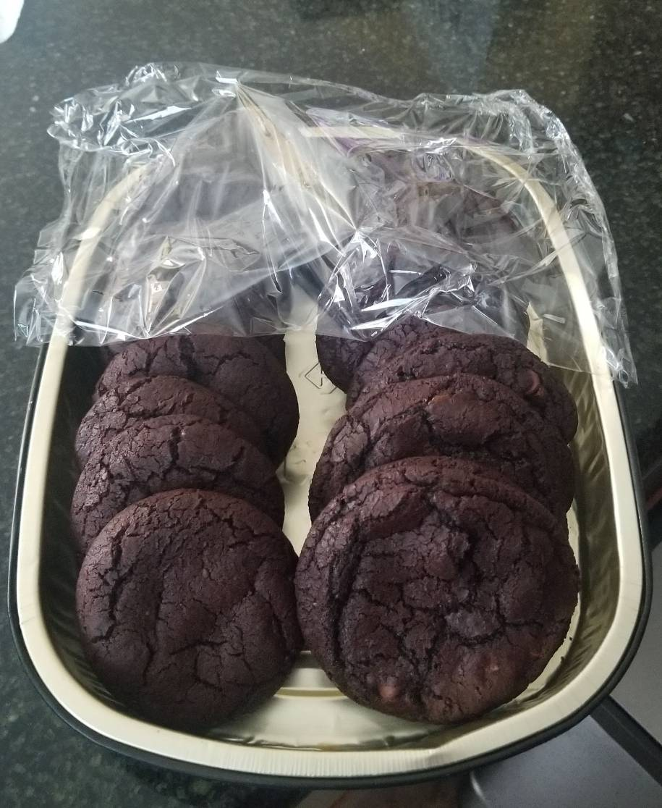

Cookies

Description
Chocolate Cookies! A very basic, yet very delicious dessert with a universal love for. Who doesn't like cookies? It's unheard of. This is a simple straight to the point recipe, no extra out of the pantry ingredients
It consits of 3 parts, a flour mixture, your sugars and optionally, a chocolate mixture. As an added plus, you won't spend too much time cleaning up.
If you so choose, you can omit the chocolate powder to have regular chocolate chip cookies. The added dutch processed cocoa powder gives the cookies a nice depth too it. You could also add a shot of espresso to develop it as well.
Ingredients
Flour Mixture
- 1 Cup of Flour
- 1/2 Teaspoon Kosher Salt
- 1/2 Teaspoon of Baking Soda
Sugar Mixture
- 3/4 Cup Brown Sugar
- 1/2 - 1/4 Cup of White Sugar
- 1 Stick (1/2) Cup of Melted Butter
- 1 Egg
- 1 Egg Yolk
- 2 Teaspoons of Vanilla Extract
Chocolates!
- 1/4 Cup of Dutch Processed Cocoa Powder
- 1 - 2 Handfuls of Chocolate Chips
Steps
- Combine Flour, Salt and Baking soda into a large bowl and whisk together. Set aside.
- In a separate mixing bowl, combine brown sugar and white sugar. Then mix in melted butter.
- Mix in one egg, and then add the egg yolk. Mix until the eggs are incorporated and then mix in your vanilla extract.
- Add the flour mixture and then the cocoa powder. Fold the mixture in with a spatula, add in the chocolate chips after you get a dough like consistency.
- Cover the dough and refrigerate for 30 minutes, or overnight.
- Temperature of the dough is important, leave the dough out for 10-15 minutes. (If refrigerated overnight, leave it out longer). Until you’re able to easily scoop and form the cookie.
- Using an ice cream scooper, form the cookie dough into balls and lay it out on a tray with parchment paper.
- While you are doing the step above, preheat the oven at 325 F.
- All ovens are different, bake the cookies for at least 10-12 minutes. Then you’re done!
Additional Tip!
If you want a denser/chewier cookie, while the cookies are baking, pick up the tray at around 6 minutes and 2 minutes, and then drop them. Sounds weird, but it pops the bubbles formed inside of the cookie leading them to be more chewy.